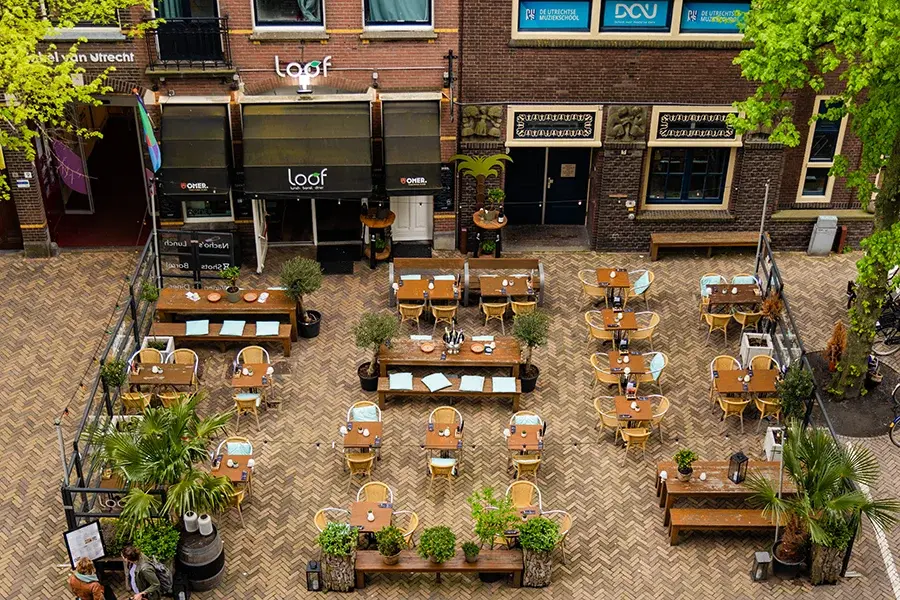
Domplein 8, Utrecht
Lunch, borrel en diner aan het Domplein
Een bijzonder restaurant op een heel bijzondere plek. Dagelijks open vanaf 12.00 uur.
- Lunch 12.00 tot 17.00
- Diner 17.00 tot 22.00
- Borrel de hele dag
Welkom bij LOOF
Op één van de mooiste plekjes van Utrecht, het Domplein, vind je LOOF: een bijzonder restaurant op een heel bijzondere plek.
Na een dagje shoppen, slenteren of werken kan je bij ons genieten van een lunch, borrel of diner.
Bij LOOF staat gastvrijheid op nummer 1. We laten jullie genieten van verrassende gerechten, gemaakt met verse en pure ingrediënten, alles met veel passie en liefde bereid.
Team LOOF
Openingstijden
Dagelijks vanaf 12.00 uur geopend voor lunch, borrel en diner.
- Lunch
- 12.00 tot en met 17.00 uur
- Diner
- 17.00 tot en met 22.00 uur
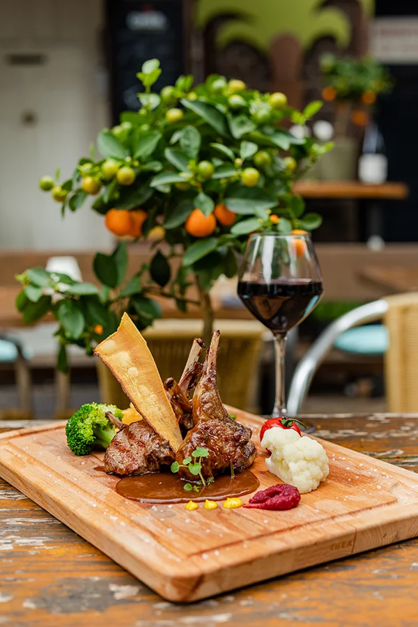
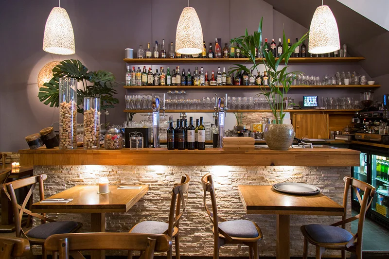
De kaart
Van Spakenburg tot Buenos Aires: elk gerecht op onze kaart draagt de plek waar het vandaan komt.
= vegetarisch. Prijzen in euro’s. Allergieën of wensen? Laat het ons gerust weten.
Impressie
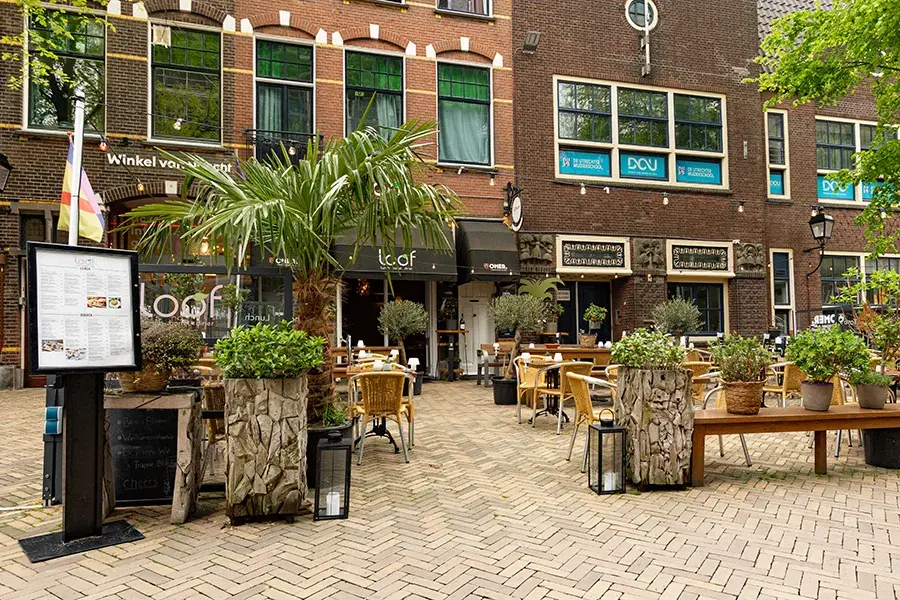
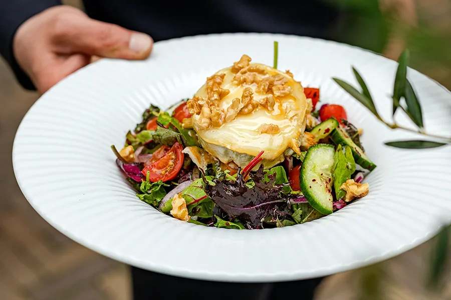
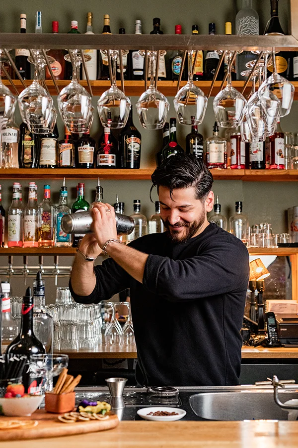
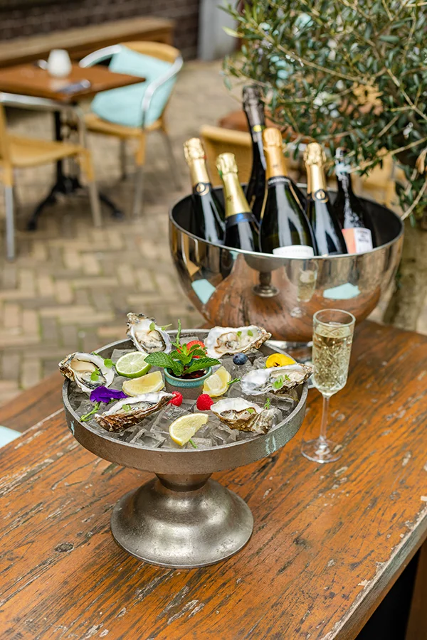
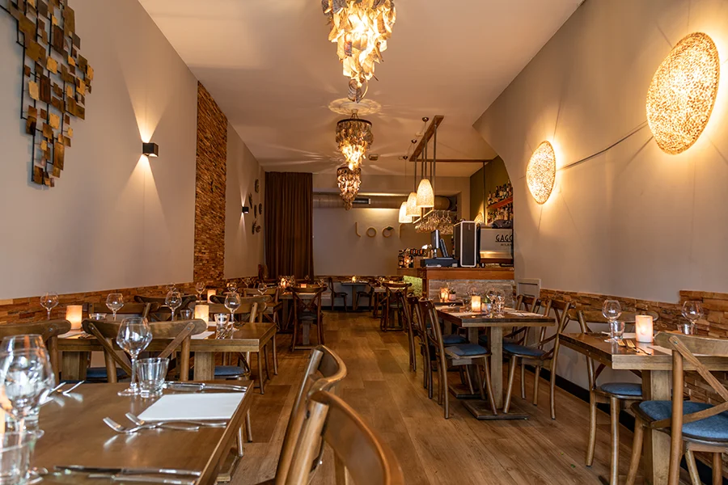
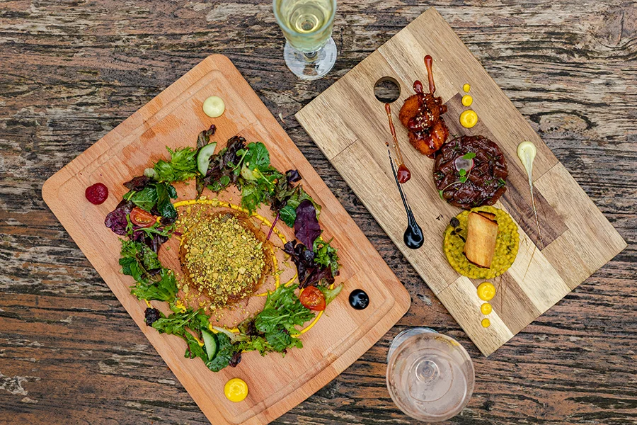
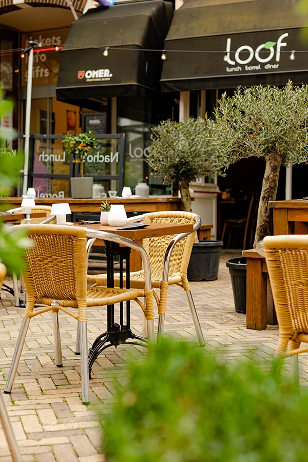
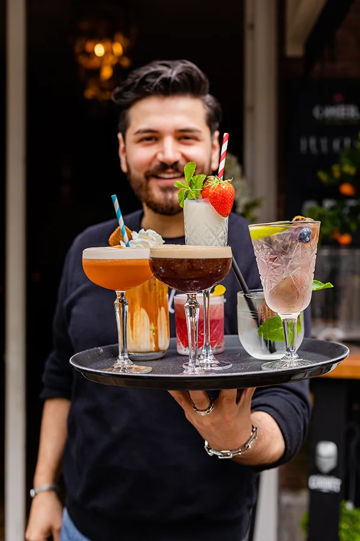
Wat gasten zeggen
Erg lekker gegeten! Bediening is super vriendelijk en behulpzaam. Lamsvlees en steak waren mega lekker en er is super veel keus aan voor en hoofdgerechten, een aanrader!
Google review
Geweldig personeel. Mooie locatie bij de Dom. Mooie cocktails en super eten. Een pareltje in het centrum.
Google review
Heerlijk gegeten. De vegetarische opties waren echt geweldig. Geen standaard keuzes, maar juist eens wat anders. Top voor zowel vega als vlees eters.
Google review
Reserveren
Wat leuk dat je wilt reserveren bij LOOF!
Kom genieten op ons terras of binnen in ons restaurant. Reserveren kan dagelijks tussen 12.00 en 22.00 uur, telefonisch of via het formulier.
030 - 231 58 66Of mail naar info@restaurantloof.nl
Contact en bereikbaarheid
Restaurant LOOFDomplein 8
3512 JC Utrecht
030 - 231 58 66
info@restaurantloof.nl
Parkeren
Wij adviseren te parkeren in Parkeergarage Springweg (Strosteeg, 3510 VK Utrecht). Deze ligt op ca. 5 minuten lopen van ons restaurant.
Openbaar vervoer
Neem de bus vanaf Utrecht Centraal. Lijn 2, Museumkwartier, halte Domplein.